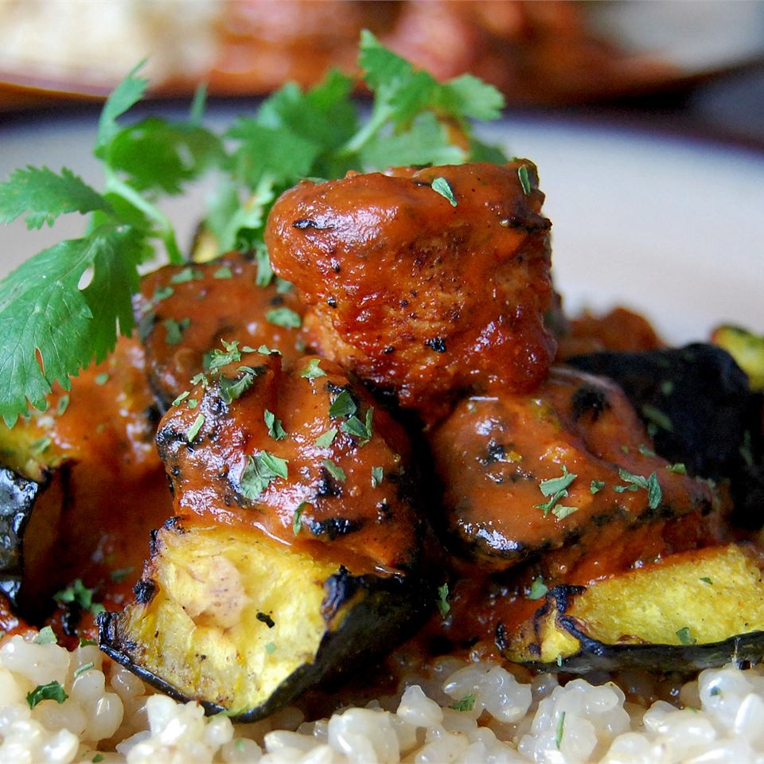

Chicken Tikka Masala

Chicken Tikka Masala
This is an iconic dish within Indian cuisine and features a rich flavor highlighted by the balance of acidity of the tomato sauce and bold spices blended with the yogurt, butter, and cream.
Ingredients
- 1 cup yogurt
- 1 tablespoon lemon juice
- 2 teaspoons fresh ground cumin
- 1 teaspoon ground cinnamon
- 2 teaspoons cayenne pepper
- 2 teaspoons freshly ground black pepper
- 1 tablespoon minced fresh ginger
- 1 teaspoon salt, or to taste
- 3 boneless skinless chicken breasts, cut into bite-size pieces
- 4 long skewers
- 1 tablespoon butter
- 1 clove garlic, minced
- 1 jalapeno pepper, finely chopped
- 2 teaspoons ground cumin
- 2 teaspoons paprika
- 1 teaspoon salt, or to taste
- 1 (8 ounce) can tomato sauce
- 1 cup heavy cream
- ¼ cup chopped fresh cilantro
Steps
- In a large bowl, combine yogurt, lemon juice, 2 teaspoons cumin, cinnamon, cayenne, black pepper, ginger, and salt. Stir in chicken, cover, and refrigerate for 1 hour.
- Preheat a grill for high heat.
- Lightly oil the grill grate. Thread chicken onto skewers, and discard marinade. Grill until juices run clear, about 5 minutes on each side.
- Melt butter in a large heavy skillet over medium heat. Saute garlic and jalapeno for 1 minute. Season with 2 teaspoons cumin, paprika, and 1 teaspoon salt. Stir in tomato sauce and cream. Simmer on low heat until sauce thickens, about 20 minutes. Add grilled chicken, and simmer for 10 minutes. Transfer to a serving platter, and garnish with fresh cilantro.